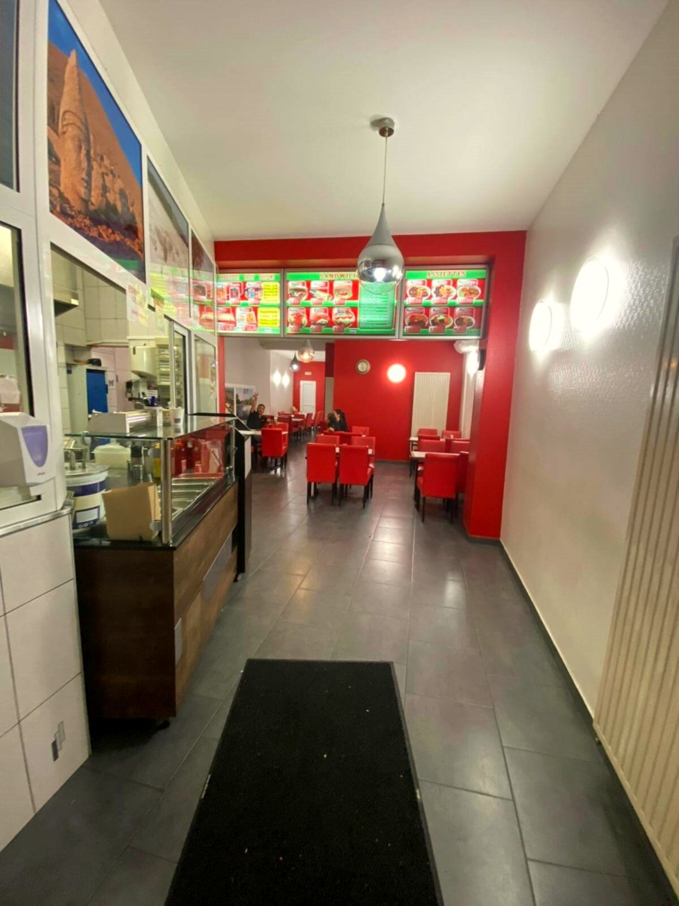
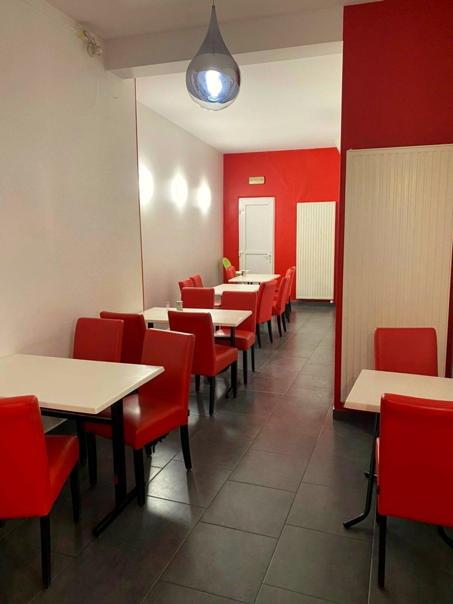
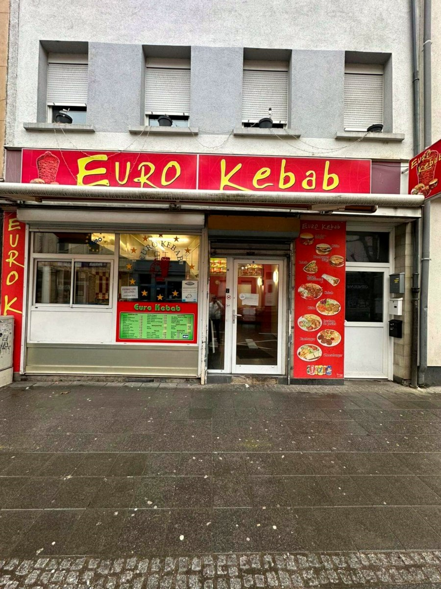

Euro Kebab
Esch-sur-Alzette · kebab & grill depuis 1996
Un comptoir connu de tout Esch — sandwichs, kebabs et tacos, la même sauce blanche maison depuis les débuts.
Une institution du quartier.
Le secret, selon Umut, l'un des gérants : de l'amour, et une sauce blanche maison dont la recette reste jalousement gardée.
— propos rapportés, Escher Blog, 2023Depuis 1996, Umut et Mustafa tiennent ce comptoir kebab au cœur d'Esch — halal, ouvert tard, fréquenté par les étudiants, les employés du quartier, les familles, et parfois des artistes de passage à la Rockhal toute proche.

Une salle simple, pour manger vite et bien.
Un couloir de tables et de chaises rouges, un carrelage sombre, une lumière basse — le genre de salle qu'on connaît par cœur quand on est du quartier.
Ce qu'on y mange.
Les enseignes lumineuses du comptoir annoncent la carte : sandwichs, kebabs, tacos, assiettes et salades. Aucune carte à jour n'a été retrouvée en ligne — plats et prix exacts à confirmer sur place.
Sandwichs
Sandwich kebab, sauce blanche maison.
Kebabs & brochettes
À la broche, servis en sandwich ou en assiette.
Tacos
Format tacos, même viande, même sauce maison.
Assiettes
Kebab en assiette, généreux, pour manger sur place.
Salades
Salades fraîches, en accompagnement ou seules.
Halal
Viande halal, à emporter ou sur place.
Catégories réellement au menu (enseignes du comptoir, editus.lu) — plats précis et prix à confirmer sur place.
6, rue d'Audun, Esch-sur-Alzette.
eurokebab.lu ne répond plus — le domaine est parqué chez le registrar et ne sert plus le site du restaurant. Ceci est une proposition de nouveau site, à partir de vos photos.

Ouvrir l'itinéraire ↗